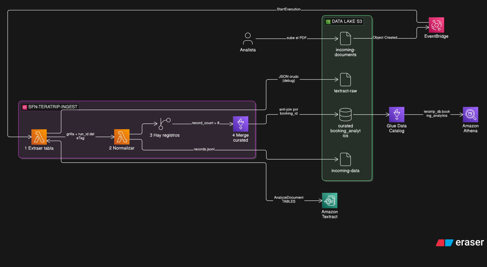
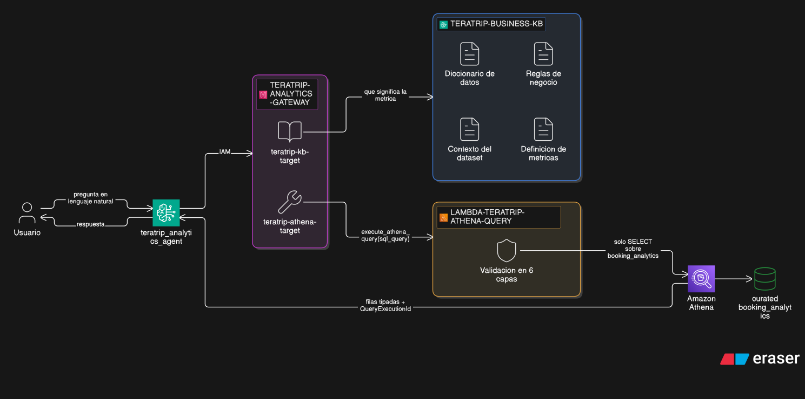

Ingesta automática de reservas desde documentos + agente conversacional sobre Athena
TeraTrip es una empresa ficticia de turismo digital que centraliza reservas, clientes, vuelos, hoteles y pagos para análisis de negocio.
El equipo de datos debe disponibilizar estos datos para responder preguntas operativas y comerciales sobre revenue, reservas, cancelaciones, destinos, clientes, aerolíneas y hoteles.
Una capa Golden: teratrip_booking_analytics.parquet. Donde los cinco orígenes de datos conviven en una sola tabla, catalogada en Glue y consultable desde Athena.
Este laboratorio no reconstruye nada de eso. Lo extiende con dos capacidades que no tenía.
Parte de las altas de TeraTrip no vienen del sistema: llegan como documentos PDF de agencias y operadores.
Alguien del equipo técnico las transcribe a mano. Si eso no pasa, esas reservas no existen para el análisis: no suman al revenue, no aparecen por destino, no entran en ningún reporte.
El costo no es la demora. Es que el reporte que se mira está incompleto y nadie lo sabe.
El dataset analítico tiene las respuestas, pero para obtenerlas hay que saber SQL y conocer el esquema.
«¿Cuál fue el destino con más revenue confirmado?» es una pregunta de negocio de 8 palabras que hoy requiere un intermediario técnico.
El costo tampoco es la espera. Es que la mayoría de esas preguntas no se llegan a responder.
Pipeline event-driven para OCR (Reconocimiento Óptico de Caracteres): Extrae, normaliza e ingresa registros a la tabla sábana sin intervención humana (automatizado), sin generar duplicados y a partir de un archivo PDF.
Agente RAG-to-SQL serverless: Traduce lenguaje natural a SQL validado, ejecutando consultas contra Athena con contexto de negocio.

customer_id lo decide la Lambda de normalización. Guardar el JSON crudo antes de interpretarlo aísla los fallos de OCR de los fallos de esquema.

El que razona. Interpreta la pregunta, decide qué herramienta necesita y redacta la respuesta final.
La puerta. Expone las herramientas y valida quién las invoca. El agente nunca habla con Athena directamente.
El contexto. Qué significa cada columna y cómo se calcula cada métrica.
Los datos. Recibe el SQL, lo valida en seis capas y recién entonces lo ejecuta.
SELECT destination_city, SUM(confirmed_revenue) …Cada documento que entra agrega filas a la tabla, sin duplicar lo que ya existía.
20 columnas, una fila por reserva. El contrato de esquema define qué significa cada una.
Cada pregunta del agente se responde contra esa misma tabla, en el momento en que se hace.
Las dos partes las desarrollé y probé por separado. No comparten código, ni permisos, ni despliegue: comparten una tabla. Ese es todo el acoplamiento — cambiar el motor de ingesta no obliga a tocar el agente, y cambiar el modelo no obliga cambiar el pipeline.
Aunque 500 mil registros es un volumen manejable hoy, elegí Glue (el servicio estrella de AWS para ETL) porque aporta escalabilidad mediante procesamiento distribuido. Esto blinda la arquitectura para el futuro, evitando los límites que sufriría una Lambda al crecer masivamente.
Organizar las reglas en Markdown por dominio garantiza que el chunking corte por encabezados. Cada fragmento recuperado llega al modelo como un concepto autocontenido y legible.
La validación de SQL vive en la Lambda, no en el prompt. Un prompt se sortea con una instrucción hábil ("ignora tus reglas"); el código impone los límites de forma estricta e ineludible.
Detectar eventos duplicados no alcanza si el PDF es regenerado. La garantía final contra duplicados es el anti-join por booking_id en Glue: razona sobre el dato, no sobre el archivo.
incoming-documents/booking_id